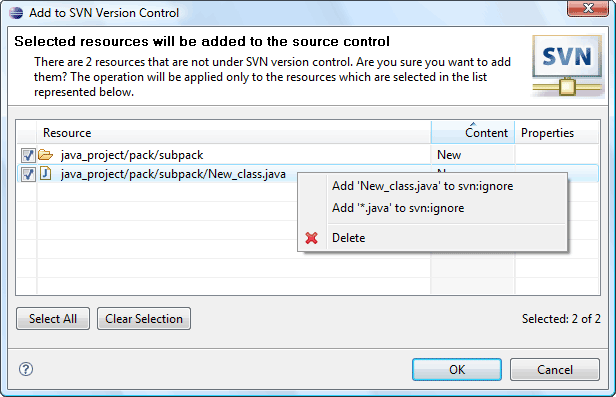

|
|
|
If the user wants to add some resources to source control he should select them and click on the 'Team>Add to Version Control...' menu item of the resource pop-up menu or 'Add to Version Control...' menu item of SVN main menu group. The dialog will appear to allow the user to choose the resources to add to Version Control.
|
Tip: |
If the user doesn't want to add resources to Version Control one by one but add them automatically while committing changes he can activate this option on the SVN General Preferences page. |
This is how the 'Add To SVN Version Control Dialog' looks like:
